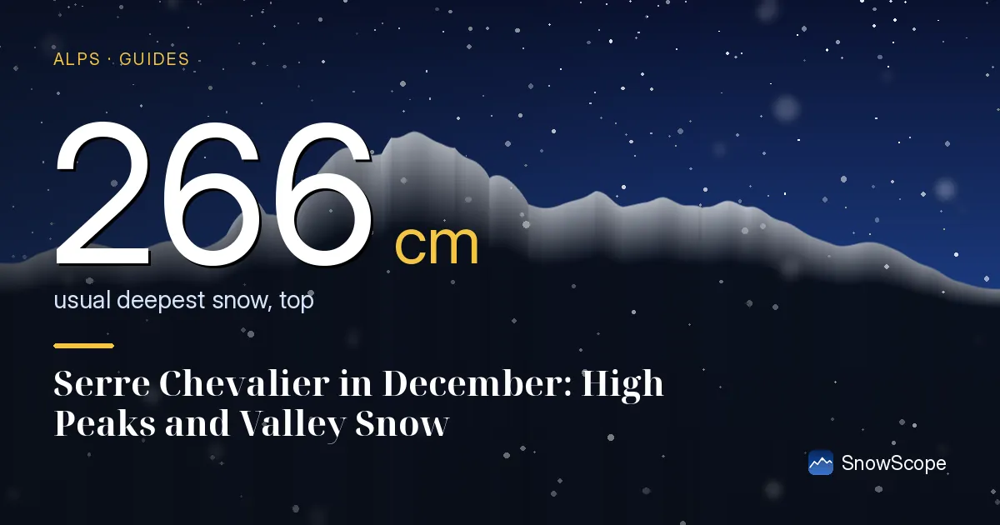

Serre Chevalier in December: High Peaks and Valley Snow
Serre Chevalier is a large ski area in the French Alps with 157 km of mapped runs and 70 mapped lifts. In December, the snow depth varies a lot between the high peaks and the valley floor. If you pick the right week and stay high, you can find good conditions for a lower price.
See the live snow forecast for Serre Chevalier in the SnowScope appSnow depth, powder alerts and the 3D map, free.
The vertical spread from Briancon to Le Monetier
Serre Chevalier is a long valley of villages with a mapped ski area that covers 157 km of runs. The mountain has a big vertical of 1546 m. The lowest lift is at 1219 m and the highest lift reaches 2765 m. This means there is a huge difference in conditions between the top and the bottom. There are 70 mapped lifts connecting the different villages in the valley.
In a usual December, the base at 1219 m has 30 cm of snow. However, the top of the lifts at 2765 m usually has 111 cm. This gap is important for anyone planning a trip in the early season. You can often find deep snow at the top while the valley floor is still thin. Our snow history shows that the base can be as thin as 4 cm, which happened in the 2015-16 season.

Choosing the right week for snow
Timing is very important in this long valley. Our snow history of 46 past winters shows that the top of the mountain is very reliable. From 8 December onwards, the top has 30 cm or more of snow in 100 % of past winters. If you want 50 cm or more at the top, that happens in 87 % of past winters between 8 and 14 December. It rises to 96 % of past winters, or about 9 winters in 10, after 15 December.
Mid-mountain at 1992 m is also quite safe. It has 30 cm or more in about 9 winters in 10 during the third week of December. The base at 1219 m is more difficult. In the first week of December, the base only has 30 cm or more in 30 % of past winters. This improves to 67 % of past winters by the final week of the month. If you visit early, you should plan to spend most of your time on the higher runs.
Early season prices and current outlook
You can save money by skiing before the Christmas holidays. An adult 6-day pass from opening until 18 December 2026 costs 276.00 EUR. If you wait until 19 December 2026, the price for the same 6-day pass rises to 345.00 EUR. Staying in the higher villages can help you reach the 1992 m level where the snow is more consistent.
Looking at the snow now on 13 November 2026, there is 0 cm at the base and mid-mountain, but the top already has 14 cm. The two-week outlook for the mid-mountain and above from 13 November to 26 November 2026 shows a range of 69 cm to 100 cm of new snow. This is a positive sign for the start of the season.
Comparing the Southern Alps neighbors
It is helpful to compare this area with Vars-Risoul nearby. Vars-Risoul has a mapped ski area of 131 km of runs and 38 mapped lifts. Its highest lift is at 2722 m, which is slightly lower than Serre Chevalier. In a usual December, the top of Vars-Risoul has 77 cm of snow, while Serre Chevalier has 111 cm at its peak. Serre Chevalier also has a larger vertical drop of 1546 m compared to 1090 m at Vars-Risoul.
For costs, a 6-day pass at Vars-Risoul is 298 EUR for the winter season. This is more expensive than the early-season price of 276.00 EUR at Serre Chevalier. At the top of Vars-Risoul, the chance of having 50 cm or more of snow between 8 and 14 December is 65 %, which is lower than the 87 % chance at Serre Chevalier. Both resorts have a similar chance of 30 cm at the base in late December, with Vars-Risoul at 74 % and Serre Chevalier at 67 %.
A look at the long term snow trend
Our snow history shows an interesting trend over the last 46 winters. In the middle of the first 15 winters (1980-81 to 1994-95), the average December snow depth at the base was 21 cm. In the middle of the last 15 winters (2011-12 to 2025-26), this average increased to 38 cm. At mid-mountain, the average went from 46 cm to 63 cm. At the top, it rose from 92 cm to 106 cm.
Even though some years are thin, the overall trend for December snow has been going up. Last winter, in December 2025-26, the average depth at the top was 102 cm, which is close to the usual depth of 111 cm. The usual first lasting snow day at the top is 05 October, while at the base it does not usually arrive until 28 October. This confirms that the higher ground is the best place for early turns.
Tips for skiers
- Book your trip for the second or third week of December to get the 276.00 EUR pass price.
- Focus your skiing above 1992 m where there is a 93 % chance of 30 cm of snow after 15 December.
- Check the avalanche bulletin before going off-piste, especially if the top hits its deep December levels of 192 cm.
- Buy your 6-day pass on the official site before 19 December to avoid the price increase to 345.00 EUR.
More maps (external sites)
References and credits
- Serre Chevalier, official booking site, ski passes 2026-27 reservation.serre-chevalier.com/achetez-vos-ski-pass-serre-chevalier-et-autres-prestations.html
- Risoul, official ski pass page, Forêt Blanche 2026-27 risoul.labellemontagne.com/fr/hiver/forfaits/risoul-foret-blanche/
- Risoul, official 6-day Forêt Blanche pass page 2026-27 risoul.labellemontagne.com/fr/hiver/forfaits/6-jours-foret-blanche/
- SnowScope, December snow at three heights and today's snow map snowscope.app/
About these numbers
Snow numbers: SnowScope snow history, 46 past winters (1980-81 to 2025-26) at three heights of each resort (a model of the past corrected for height: an estimate for an area, not resort measurements); December figures computed from the daily depths of those winters. Snow now and the two-week outlook: SnowScope forecasts (outlook from ECMWF and GFS, a range, not a promise). Lifts and runs: OpenSkiMap mapping. Prices: the official resort pages listed below, read on 2026-11-13; prices can change, check before booking.
Official avalanche bulletins: Météo-France – Bulletin d'estimation du risque d'avalanche
Cite this report
For research, teaching or the press: the numbers and charts are free to reuse under CC BY 4.0 with this citation.
SnowScope (2026), Serre Chevalier in December: High Peaks and Valley Snow, https://snowscope.app/blog/en/2026/11/serre-chevalier-december-ski-week-snow-history-2026.html, accessed 2026-11-14
SnowScope (Atlas Labs). (2026, November 14). Serre Chevalier in December: High Peaks and Valley Snow. SnowScope snow reports. https://snowscope.app/blog/en/2026/11/serre-chevalier-december-ski-week-snow-history-2026.html
BibTeX
@misc{snowscope2026serrechevalierdecembersk,
author = {{SnowScope (Atlas Labs)}},
title = {Serre Chevalier in December: High Peaks and Valley Snow},
year = {2026},
month = nov,
howpublished = {\url{https://snowscope.app/blog/en/2026/11/serre-chevalier-december-ski-week-snow-history-2026.html}},
note = {Published 2026-11-14 20:51 UTC; accessed 2026-11-14}
}· CC BY 4.0 · Methods, data and tools →
Serre Chevalier: snow and temperature by height, this winter vs last (tools) →
Follow Serre Chevalier
Free: a message when fresh snow is coming, and the forecast every morning.
More snow reports

Alpine snow depths are running behind normal for early November, with only 55 cm at the best resorts as of November 3rd.

New snow forecast for the Alps through early December. Saint François Longchamp leads with 228 cm expected over 14 days, starting with 35 cm on Thursday.

Artesina holds the deepest snow in the Alps this weekend with 22 cm upper slopes. Week 10 sees the best conditions historically. Data from 5 November.